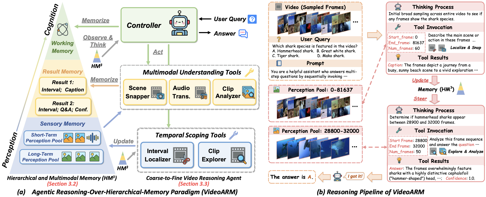

VideoARM: Agentic Reasoning over Hierarchical Memory for Long-Form Video Understanding
Abstract
Long-form video understanding remains challenging due to the extended temporal structure and dense multimodal cues. Despite recent progress, many existing approaches still rely on hand-crafted reasoning pipelines or employ token-consuming video preprocessing to guide MLLMs in autonomous reasoning. To overcome these limitations, we introduce VideoARM, an Agentic Reasoning-over-hierarchical-Memory paradigm for long-form video understanding. Instead of static, exhaustive preprocessing, VideoARM performs adaptive, on-the-fly agentic reasoning and memory construction. Specifically, VideoARM performs an adaptive and continuous loop of observing, thinking, acting, and memorizing, where a controller autonomously invokes tools to interpret the video in a coarse-to-fine manner, thereby substantially reducing token consumption. In parallel, a hierarchical multimodal memory continuously captures and updates multi-level clues throughout the operation of the agent, providing precise contextual information to support the controller in decision-making. Experiments on prevalent benchmarks demonstrate that VideoARM outperforms the state-of-the-art method, DVD, while significantly reducing token consumption for long-form videos.

Figure 2. Overview of VideoARM. (a) The Agentic Reasoning-over-Hierarchical-Memory paradigm, featuring Scene Memory, Fact Memory, and Result Memory; (b) The reasoning pipeline where a controller iteratively observes, thinks, acts, and memorizes to answer questions about long-form videos.
BibTeX
@inproceedings{yin2026videoarm,
title={VideoARM: Agentic Reasoning over Hierarchical Memory for Long-Form Video Understanding},
author={Yin, Yufei and Meng, Qianke and Chen, Minghao and Ding, Jiajun and Shao, Zhenwei and Yu, Zhou},
booktitle={Proceedings of the IEEE/CVF Conference on Computer Vision and Pattern Recognition (CVPR)},
year={2026}
}